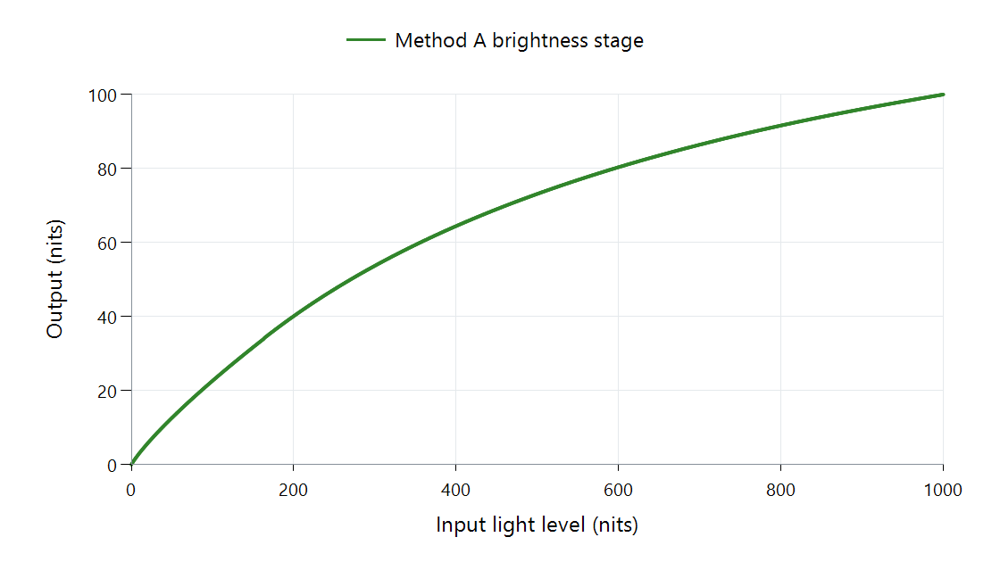

Tone Mapping Curve: BT.2446 Method A
BT.2446 Method A defines a conversion between HDR and SDR that includes a shaped brightness mapping and associated color processing.
BT.2446 Method A is an HDR/SDR conversion method. A renderer option called BT.2446A can use its brightness function within a larger conversion pipeline; the complete report also defines associated color processing.
Power, logarithmic, and piecewise coordinates
The plotted library function normalizes source light to the source range and applies a power representation. It then compresses that coordinate through a logarithmic relationship whose scale depends on the peak.
A piecewise function treats three coordinate regions differently: a scaled lower segment, a quadratic middle segment, and a linear upper segment. Finally, the calculation converts back through the destination relationship to obtain output light. The changing slope is what distributes contrast across the range.

libplacebo 7.360.1 brightness function, zero black at both ends. The plot isolates this scalar stage of Method A.
| Source light | Output light in this example |
|---|---|
| 10 nits | About 3.13 nits |
| 100 nits | About 22.66 nits |
| 500 nits | About 73.15 nits |
| 1,000 nits | 100 nits |
The peak fits, while the hundred-nit region uses less than a quarter of the target peak. The function has chosen a particular contrast distribution; it is not simply source light divided by ten. For example, 500 nits would become 50 under that proportional scaling, rather than 73.15 here.
Work one 100-nit point through those coordinates
For the stated 1,000-nit source and 100-nit target, define h = 1 + 32 × (1,000/10,000)^(1/2.4), about 13.260, and s = 1 + 32 × (100/10,000)^(1/2.4), about 5.697. These peak-dependent factors set the two logarithmic ranges.
- Normalize the source point and take the power: (100/1,000)^(1/2.4) ≈ 0.3831.
- Form q = ln[1 + (h−1) × 0.3831] / ln(h), about 0.6732.
- This q is in the lower piecewise region, q ≤ 0.7399. Apply 1.077q, giving about 0.7250.
- Return through the target logarithmic relationship: V = (s^(1.077q) − 1)/(s − 1), about 0.5387.
- The zero-black target response gives 100 × V^2.4 ≈ 22.66 nits.
The upper regions use a quadratic and then another linear expression instead of the lower 1.077q rule. The branch is selected in the intermediate coordinate, so its breakpoints are not direct input-nit thresholds.
Put the function back into the complete conversion
For a neutral gray, brightness can be followed with a scalar. For colored objects, changing light also changes color appearance, and the target can have another gamut or volume. Method A's color operations address that relationship; a renderer using only the named brightness stage combines it with its own surrounding color path.
Output transfer encoding is another required job. The mapped light value is a processing result, not automatically a final YCbCr code. The HDR-to-SDR walkthrough explains that handoff.
In an Emby comparison, locate whether the complete method or a scalar stage is being used, then retain the same source and target assumptions. That identifies why two results with the same Method A name can use different color processing around the brightness curve.